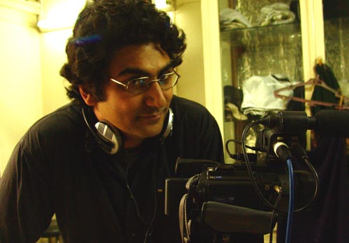

Reza, sometimes known as "Adopted Son", is one big catch I made in my desert trips. I met him in the old carvanseray of Maranjab in 2004, and we have been great friends since. He is an accomplished documentary film maker. His latest film Final Fit has won awards and got good reviews in Iran and abroad, including one in the Daily Star.

Reza Haeri Mazandarani, on the set of his film Final Fit